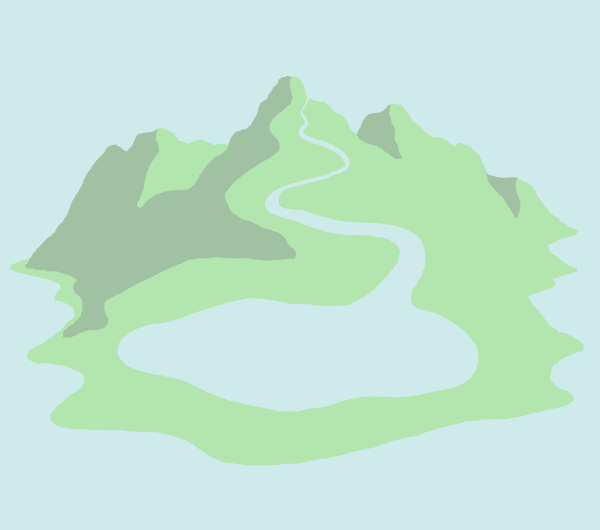

Telescope is a game currently in development by myself and James Wood.
It is a short game exploring recursive landscapes through a telescope, inspired by art from Jacques Perretti after we wandered into his studio/gallery on a trip to St Malo in 2018.
We are enjoying thinking and designing around repeated patterns in nature, and how features like colour and scale affect our perception of them. The interconnectedness of natural systems is something that fascinates me.